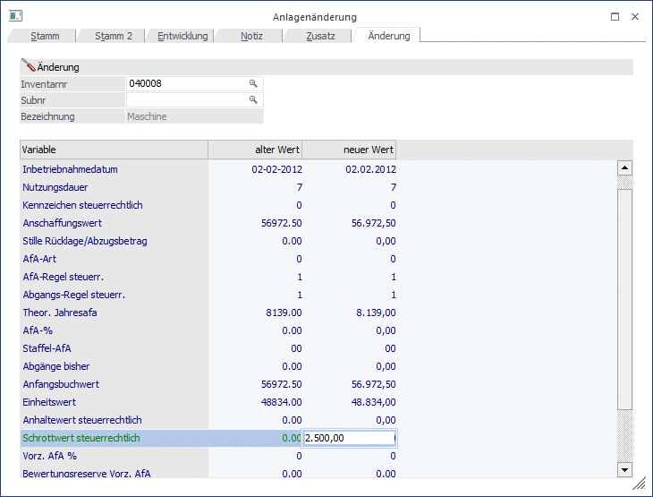
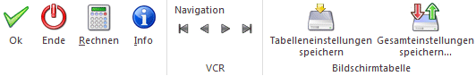
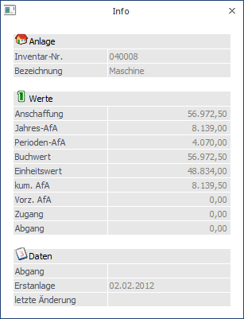

Grundsätzlich können jene Anlagen-Stammdaten, die im Anlagenstamm eingegeben und auch abgespeichert wurden, nicht mehr verändert werden. Die Anlagenänderung ermöglicht nun die Änderung einer bereits bestehenden Anlage, sofern im aktuellen Wirtschaftsjahr noch keine Jahresabschreibung durchgeführt wurde.
Um eine Anlagenänderung vornehmen zu können, wechselnd Sie in das Register Anlagenänderung im Anlagenstamm.

Ø Inventarnummer
20stellig, alphanumerisch
Hier wird die Inventarnummer des Anlagengutes eingetragen; mit der Matchcode-Suchfunktion können Sie die gewünschte Inventarnummer suchen.
Ø Subnr.
Wird für Anlagegüter vergeben, bei denen es sich um eine Untergruppe handelt (z.B. PC/Laufwerk /Grafikkarte, etc).
Ø Variable
Die Variable legt genau fest welcher Wert verändert werden soll (Anschaffungsdatum, Inbetriebnahmedatum, Nutzungsdauer, Kennzeichen steuerrechtlich, Anschaffungswert, Stille Rücklage, AfA-Art, AfA-Regel steuerr., Abgangs-Regel steuerr., Theor. Jahres-AfA, AfA-%, Staffel-AfA, Abgänge bisher, Anfangsbuchwert, Einheitswert, Anhaltewert steuerrechtlich, Schrottwert steuerrechtlich, Vorz. AfA. %, Bewertungsreserve Vorz. AfA, IFB %, IFB;).
Ø alter Wert
Das Info-Feld zeigt den aktuellen Wert - dieser kann nicht mehr verändert werden.
Ø neuer Wert
In dieser Spalte wird der neue Wert eingegeben.
Buttons

Ø OK
Mit dem OK-Button können Wertkorrekturen (z.B. Buchwert Anfang, Abschreibung) für Anlagegüter gespeichert werden.
Ø Ende
Mit dem Ende-Button wird das Menü Anlagenänderung beendet.
Ø Rechnen
Durch Anklicken dieses Buttons wird die gesamte Tabelle neu berechnet. Die Berechnung der Tabelle erfolgt aufgrund der eingetragenen Stammdaten. Wird z.B. der Anschaffungswert geändert, erfolgt die Berechnung für die Abschreibung aufgrund der eingetragenen Daten (Anschaffungsdatum, Restnutzungsdauer). Mit dem OK-Button werden die so neu errechneten Werte gespeichert.
Hinweis
Diese RECHNEN-Funktion steht nur bei neuen Anlagegütern zur Verfügung; d.h. Anlagegüter, die im aktuellen Wirtschaftsjahr angeschafft wurden (ansonsten ist dieser Button nicht anwählbar).
Ø Info
Mit dem Info-Button wird das Anlagen-Info Fenster geöffnet

Hinweis 1
Die Felder Anschaffungswert, Stille Rücklage, Abgänge bisher und Anfangsbuchwert sind in der Anlagenänderung gesperrt, wenn es im aktuellen Wirtschaftsjahr bereits festgeschriebene Entwicklungszeilen gibt oder Änderungen in Folgejahren vorgenommen werden.
Hinweis 2
Ein neu erfasstes Anlagegut wird automatisch abgespeichert, wenn in das Register Änderung gewechselt wird. Es kommt jetzt der entsprechende Hinweis:
Ø Navigation
Über die sogenannte VCR-Buttonleiste kann durch Mausklick zwischen den Datensätzen geblättert werden. Damit auf diese Weise auch Daten kontrolliert und geändert werden können, kann mit der Tastenkombination SHIFT + F5 eine Zwischenspeicherung der Daten (Daten werden gespeichert, der Inhalt in den Masken bleibt bestehen, und auch der Focus bleibt im letzten veränderten Feld stehen) durchgeführt werden.
ü  Damit kann der erste Datensatz angesprochen
werden (Tastatur: STRG SHIFT POS1).
Damit kann der erste Datensatz angesprochen
werden (Tastatur: STRG SHIFT POS1).
ü Damit kann der vorherige Datensatz angesprochen werden (Tastatur: SHIFT -).
ü  Damit kann der nächste Datensatz
angesprochen werden (Tastatur: SHIFT +).
Damit kann der nächste Datensatz
angesprochen werden (Tastatur: SHIFT +).
ü  Damit kann der letzte Datensatz angesprochen
werden (Tastatur: STRG SHIFT ENDE).
Damit kann der letzte Datensatz angesprochen
werden (Tastatur: STRG SHIFT ENDE).
ü Damit wird die nächste freie Nummer für die Neuanlage gesucht (Tastatur: +).
Ø Tabelleneinstellungen speichern
Die Spalten einer Tabelle können grundsätzlich an beliebige Positionen verschoben, bzw. in der Breite entsprechend angepasst werden. Durch Anwahl des Buttons "Tabelleneinstellungen speichern" werden die Einstellungen benutzerspezifisch gespeichert und bei dem nächsten Aufruf des Programmpunktes wieder vorgeschlagen.
Ø Gesamteinstellungen speichern
Im Gegensatz zu "Tabelleneinstellungen speichern" können mit "Gesamteinstellungen speichern" mehrere Tabellenaufbauten gespeichert und nach Wunsch geladen werden. Zusätzlich werden Sonderfunktionen der Tabelle (z.B. "Spalte gruppieren") ebenfalls bei der Speicherung bedacht.